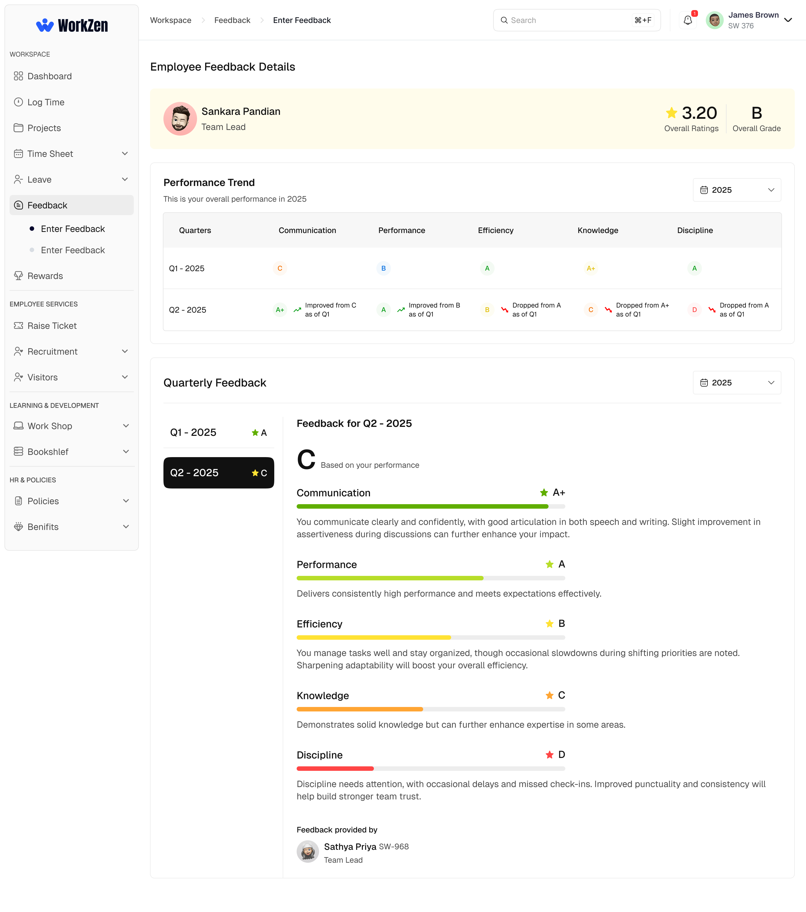
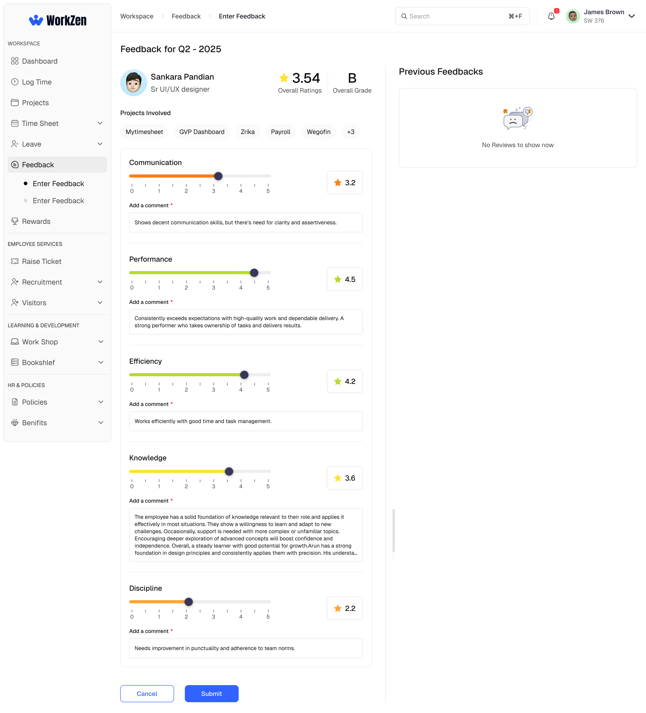
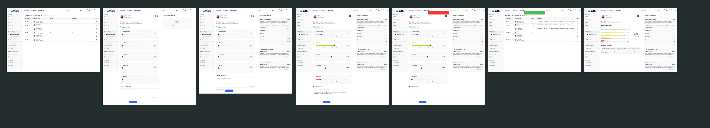
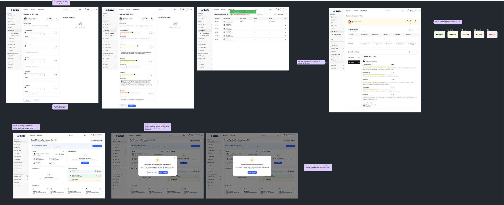
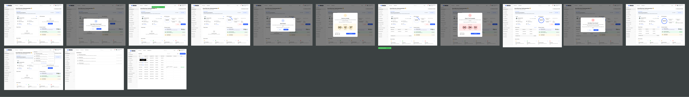
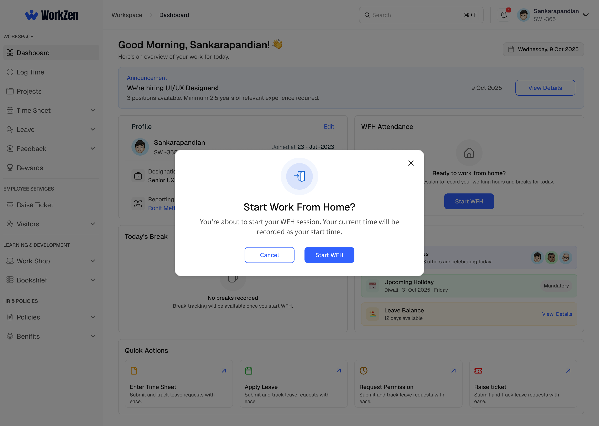

Know where you are
Distinct WFH indicators help users recognize the current attendance mode.
WORKZEN / ENTERPRISE HRMS / UX CASE STUDY
Redesigning employee feedback and extending attendance workflows for remote work—within a broader HR management platform.

01 / PROJECT OVERVIEW
WorkZen supports employees, team leads and administrators across attendance, timesheets, leave, feedback and everyday HR tasks. My work included designing and refining workflows and interfaces across the platform.
This case study focuses on Employee Feedback and Work From Home, where clearer communication, explicit status and predictable interactions were central design concerns.
02 / PROBLEM STATEMENT
The earlier feedback experience relied on five rating categories and a single overall comment. Employees could see scores without always understanding the reasons behind them. Team leads could not correct submitted feedback, while monthly reviews added repeated effort.
Separately, the attendance system was originally designed around office work. Supporting remote employees required a new mode without introducing ambiguous actions, break states or attendance records.
Other HRMS modules—including dashboard, timesheets and leave—are part of the product scope, but verified before/after evidence for those modules has not been supplied here.
03 / DISCOVERY
Employee and team-lead interviews and usability testing informed the feedback redesign. The documented issues centered on unclear rating explanations, inability to edit submitted reviews, decimal-score comparisons and the burden of monthly review cycles.
Connect every performance category with specific written feedback.
Give authorized reviewers a way to amend an accidental submission.
Explore grade-based presentation rather than emphasizing small decimal differences.
Structure the review around quarters rather than months.
Participant counts, task completion rates and post-launch metrics are not available, so no numerical research claims are made.
04 / DESIGN SOLUTION
Rather than treating performance as one aggregate score, the redesigned experience gives each category its own rating and comment. Quarterly views make trends and changes across review periods easier to examine.

Five rating dimensions now have individual explanations. This keeps the reasoning next to each rating rather than burying it in one general comment.
The quarterly performance view groups category grades, trend indicators and written feedback in a readable hierarchy.
05 / BEFORE & AFTER
The screenshots below document the feedback experience. The old and redesigned views are shown in separate frames to preserve the original interface details.


Dashboard, attendance, timesheet and leave comparisons can be added when matching old and new screenshots are available. They are not represented by fabricated examples.
06 / WORK FROM HOME
WFH was introduced as an extension of the existing attendance model. The experience needed to distinguish office and remote work while retaining clear actions and status feedback throughout the day.


Distinct WFH indicators help users recognize the current attendance mode.
Track usage against the 60-minute allowance, including early end and exceeded-duration states.
Support the nine-hour workday with understandable start, break and finish states.
07 / DESIGN SYSTEM
WorkZen uses a consistent visual language built around Geist typography, a blue primary action color, reusable form components, navigation patterns and status treatments.
Only the primary blue and Geist family are confirmed design tokens here. Other displayed values illustrate the palette and should not be treated as verified source tokens.
08 / VALIDATION & ITERATION
The feedback module was informed by interviews and usability testing. The documented problems drove the move to category-specific comments, an edit option for authorized team leads, grade-based presentation and quarterly review structure.
For WFH, the interaction design accounts for confirmation, attendance status, break timing and exceptional states. Detailed test protocols, participant counts and measured post-redesign results have not been supplied and are therefore not claimed.
09 / OUTCOMES & LEARNINGS
The redesign proposes more specific performance communication and a more structured review process. The WFH work extends an established attendance system while making the current state and next action more explicit.
My central learning was that enterprise UX improves when complex rules are translated into understandable feedback, predictable actions and reusable patterns. Measurable business or usability outcomes would require further validation.
Explore other projects ↗